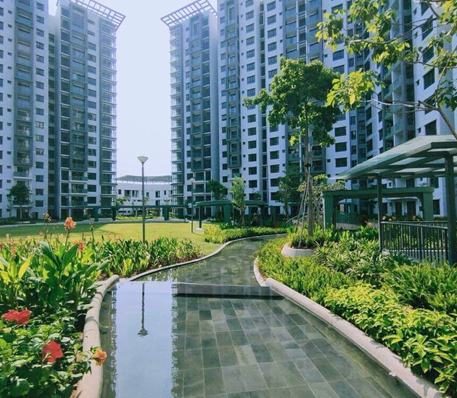

KHU ĐÔ THỊ CELADON
Thông Tin Dự Án:
- Tân Phú, TPHCM
- 82.5 hecta
- Năm thực hiện : 2022
Sản phẩm kính sử dụng :
- Kính cường lực cho hệ thống cửa và vách kính
- Kính hộp cách âm hiệu quả cho không gian sống
- Kính siêu trong tối ưu ánh sáng tự nhiên
- Kính nhúng mờ axit cho nội thất sang trọng
Thiên Phú Glass tự hào cung cấp và thi công kính cho Khu đô thị Celadon.
Với đội ngũ chuyên nghiệp, chúng tôi đã đáp ứng hoàn hảo các tiêu chuẩn khắt khe về kỹ thuật và thẩm mỹ.
Sản phẩm đảm bảo an toàn, cách âm, cách nhiệt vượt trội, tôn vinh vẻ đẹp sang trọng và bền vững cho công trình.

Liên hệ ngay để được hỗ trợ tư vấn :
Phone: (-84) 83 792 3996